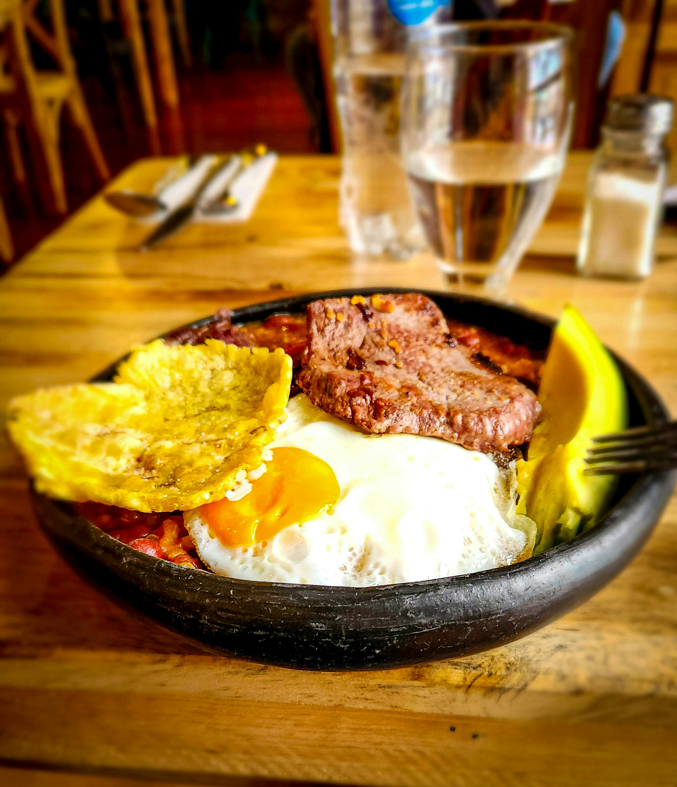

Bandeja paisa casera

La bandeja paisa es el plato más representativo de Antioquia y uno de los favoritos de toda Colombia: abundante, llena de sabor y perfecta para compartir en familia o con amigos. Esta versión es la casera de siempre, como la preparan las abuelas paisas: sin complicaciones, con ingredientes frescos y mucho cariño. ¡Prepárala un domingo y verás cómo desaparece del plato en minutos!
¿Qué ingredientes necesitamos para preparar una deliciosa bandeja paisa?
Ingredientes principales (para 4 personas generosas)
- 400-500 g de carne molida (o picada de res magra)
- 400 g de chicharrón (crujiente y tierno)
- 500 g de frijoles rojos (remojados desde la noche anterior)
- 2-3 plátanos maduros (para tajadas)
- 4 arepas de maíz (paisa o compradas)
- 4 huevos (para freír)
- 2 aguacates (en rodajas)
- 200-300 g de chorizo o morcilla (opcional)
- Para el hogao: 4-5 tomates, 2-3 cebollas largas, 2 dientes de ajo, cilantro, sal y pimienta
Los utensilios de cocina que necesitamos. ¡Porque sin ellos no hay bandeja paisa!
Para hacer una bandeja paisa casera auténtica, estos son los básicos (nada muy fancy, lo que casi todo el mundo tiene en casa):
- Olla a presión – para pitar los frijoles.
Dato curioso: "Pitar los frijoles" es como los bogotanos le decimos a cocinarlos en olla a presión. El pitido de la olla avisa que ya están listos.
- Cuchillo afilado
- Tabla de picar para verduras, ahogado y chicharrón.
- Cuchara de palo o cucharón grande ideal para revolver sin rayar la olla y servir
- Casuela de barro (la tradicional colombiana, con su canastilla de mimbre o totumo) para servir individualmente y mantener el calor (¡es lo más paisa!).
Con esto ya puedes empezar sin problemas. Si no tienes cazuela de barro, cualquier plato hondo sirve, pero la de barro le da ese toque especial.
Preparación paso a paso (toque casero de abuela paisa)
Esta es la receta más tradicional, con el toque de la abuela: sin prisas, a fuego lento y con mucho amor. Tiempo aproximado: 1.5 a 2 horas.
-
Pitar los frijoles
Pon los frijoles remojados en la olla a presión con agua (que los cubra bien, aprox. 2-2.5 litros), hoja de laurel, 1 diente de ajo, un trozo de cebolla larga y sal al gusto. Cierra la olla y cocina a presión alta por 20-25 minutos desde que suba la válvula (o según las instrucciones de tu olla). Libera la presión naturalmente (10-15 min) o con cuidado rápido. Abre, prueba que estén blandos y reserva con su caldo espeso. (Si usas frijoles sin remojar, agrega 10 min más).
-
Prepara el hogao (mientras los frijoles se cocinan)
En una sartén con aceite, pica tomate, cebolla larga y ajo. Sofríe 10-15 minutos hasta que quede una salsa espesa. Agrega cilantro picado al final, sal y pimienta. Reserva.
-
Cocina la carne molida
En la misma sartén del hogao, sofríe la carne molida con un poco de hogao, ajo y cebolla. Cocina hasta dorar bien y sazona con sal, comino y pimienta. Reserva.
-
Fríe lo que va frito (hazlo mientras esperas la presión)
- Tajadas de plátano maduro: fríe hasta dorado y crujiente.
- Huevos: uno por persona, con yema suave.
- Chorizo: asa o fríe ligeramente.
- Chicharrón: fríe o utiliza el Air frier.
-
Sirve con amor
En un plato grande coloca: frijoles con su caldo, arroz blanco, carne molida, chicharrón, chorizo, huevo frito, tajadas de plátano, arepa y aguacate. Pon hogao por encima o al lado para que cada quien se sirva a gusto.¡A disfrutar!
Dato de la abuela: Aunque sea rápido, no abras la olla de golpe si puedes esperar – deja que la presión baje sola para que los frijoles queden más cremosos y sabrosos.
Ahora tienes la auténtica receta de la abuela paisa, pero aún puedes ver más recetas colombianas caseras en nuestro menú principal.